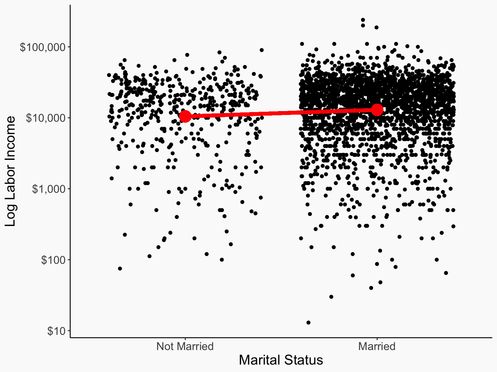

Binary Variables and Functional Form
i.e. what you actually do most of the time
Updated 2023-09-22
Check-in
- Where are we at?
- Next week we start causal methodologies. The format will be very similar to lectures up to now - extra papers
- This lecture will cover the last “intro” material
- This is a pretty packed lecture, but it’s structured to be easy to come back to and review, there will be plenty of practice next time, and this might end up broken across both days
The Right Hand Side
- Today we’ll be focusing on the right hand side of a regression
- Economists generally refer to a regression as having a “left-hand-side” of the dependent variable \(Y\), and a “right-hand-side” of all the independent stuff, like \(\beta_0 + \beta_1X + \beta_2Z + \varepsilon\).
- So far, we’ve just tossed stuff on the right-hand side and called it our treatment variable or a control variable without thinking too much harder about it
- Today we will think harder about it!
The Right Hand Side
We will look at three features of the right-hand side
- What if the variable is categorical or binary? (binary variables)
- What if the variable has a nonlinear effect on \(Y\) (polynomials and logarithms)
- What if the effect of one variable depends on the value of another variable? (interaction terms)
Binary Data
- A variable is binary if it only has two values - 0 or 1 (or “No” or “Yes”, etc.)
- Binary variables are super common in econometrics!
- Did you get the treatment? Yes / No
- Do you live in the US? Yes / No
- Is a floating exchange rate in effect? Yes / No
Comparison of Means
- When a binary variable is an independent variable, what we are often interested in doing is comparing means
- Is mean income higher inside the US or outside?
- Is mean height higher for kids who got a nutrition supplement or those who didn’t?
- Is mean GDP growth higher with or without a floating exchange rate?
Comparison of Means
- Let’s compare log earnings in 1993 between married people 30 or older vs. never-married people 30 or older
- Seems to be a slight favor to the married men
data(PSID, package = 'Ecdat')
PSID <- PSID %>%
filter(age >= 30, married %in% c('married','never married'), earnings > 0) %>%
mutate(married = married == 'married')
PSID %>%
group_by(married) %>%
summarize(log_earnings = mean(log(earnings)))# A tibble: 2 × 2
married log_earnings
<lgl> <dbl>
1 FALSE 9.26
2 TRUE 9.47Comparison of Means
Comparison of Means
The difference between the means follows a t-distribution under the null that they’re identical
So of course we can do a hypothesis test of whether they’re different
But why bother trotting out a specific test when we can just do a regression?
(In fact, a lot of specific tests can be replaced with basic regression, see this explainer)
OLS estimation, Dep. Var.: log(earnings)
Observations: 2,830
Standard-errors: IID
Estimate Std. Error t value Pr(>|t|)
(Intercept) 9.255160 0.052891 174.98636 < 2.2e-16 ***
marriedTRUE 0.212731 0.057760 3.68305 0.00023478 ***
---
Signif. codes: 0 '***' 0.001 '**' 0.01 '*' 0.05 '.' 0.1 ' ' 1
RMSE: 1.13028 Adj. R2: 0.004422Comparison of Means
Notice:
- The intercept gives the mean for the non-married group
- The coefficient on marriedTRUE gives the married minus non-married difference
- The t-stat and p-value on that coefficient are exactly the same as that
t.test(except the t is reversed; same deal) - i.e. the coefficient on a binary variable in a regression gives the difference in means
- If we’d defined it the other way, with “not married” as the independent variable, the intercept would be the mean for the married group (i.e. “not married = 0”), and the coefficient would be the exact same but times \(-1\) (same difference, just opposite direction!)
Comparison of Means
Why does OLS give us a comparison of means when you give it a binary variable?
- The only \(X\) values are 0 (FALSE) and 1 (TRUE)
- Because of this, OLS no longer really fits a line, it’s more of two separate means
- And when you’re estimating to minimize the sum of squared errors separately for each group, can’t do any better than to predict the mean!
- So you get the mean of each group as each group’s prediction
Binary with Controls
- Obviously this is handy for including binary controls, but why do this for binary treatments? Because we can add controls!
feols(log(earning..
Dependent Var.: log(earnings)
Constant 8.740*** (0.1478)
marriedTRUE 0.3404*** (0.0579)
kids -0.2259*** (0.0159)
age 0.0223*** (0.0038)
_______________ ___________________
S.E. type IID
Observations 2,803
R2 0.07609
Adj. R2 0.07510
---
Signif. codes: 0 '***' 0.001 '**' 0.01 '*' 0.05 '.' 0.1 ' ' 1Multicollinearity
- Why is just one side of it on the regression? Why aren’t “married” and “not married” BOTH included?
- Because regression couldn’t give an answer!
- Mean of married is \(9.47\) and of non-married is \(9.26\).
\[ \log(Earnings) = 0 + 9.47Married + 9.26NonMarried \] \[ \log(Earnings) = 9.26 + .21Married + 0NonMarried \] \[ \log(Earnings) = 3 + 6.47Married + 6.26NonMarried \]
- These (and infinitely many other options) all give the exact same predictions! OLS can’t pick between them. There’s no single best way to minimize squared residuals
- So we pick one with convenient properties, setting one of the categories to have a coefficient of 0 (dropping it) and making the coefficient on the other the difference relative to the one we left out
More than Two Categories
- That interpretation - dropping one and making the other relative to that, conveniently extends to multi-category variables
- Why stop at binary categorical variables? There are plenty of categorical variables with more than two values
- What is your education level? What is your religious denomination? What continent are you on?
- We can put these in a regression by turning each value into its own binary variable
- (and then dropping one so the coefficients on the others give you the difference with the omitted one)
More than Two Categories
- Make the mean of group A be 1, of group B be 2, etc.
tib <- tibble(group = sample(LETTERS[1:4], 10000, replace = TRUE)) %>%
mutate(Y = rnorm(10000) + (group == "A") + 2*(group == "B") + 3*(group == "C") + 4*(group == "D"))
feols(Y ~ group, data = tib)OLS estimation, Dep. Var.: Y
Observations: 10,000
Standard-errors: IID
Estimate Std. Error t value Pr(>|t|)
(Intercept) 1.052201 0.020061 52.4509 < 2.2e-16 ***
groupB 0.966728 0.028234 34.2402 < 2.2e-16 ***
groupC 1.952125 0.028663 68.1050 < 2.2e-16 ***
groupD 2.962117 0.028283 104.7305 < 2.2e-16 ***
---
Signif. codes: 0 '***' 0.001 '**' 0.01 '*' 0.05 '.' 0.1 ' ' 1
RMSE: 1.00384 Adj. R2: 0.548836More than Two Categories
- By changing the reference group, the coefficients change because they’re “different from” a different group!
- And notice that, as before, the intercept is the mean of the omitted group (although this changes once you add controls; the intercept is the predicted mean when all right-hand-side variables are 0)
tib <- tib %>% mutate(group = factor(group, levels = c('B','A','C','D')))
feols(Y ~ group, data = tib)OLS estimation, Dep. Var.: Y
Observations: 10,000
Standard-errors: IID
Estimate Std. Error t value Pr(>|t|)
(Intercept) 2.018929 0.019867 101.6207 < 2.2e-16 ***
groupA -0.966728 0.028234 -34.2402 < 2.2e-16 ***
groupC 0.985397 0.028528 34.5409 < 2.2e-16 ***
groupD 1.995390 0.028146 70.8932 < 2.2e-16 ***
---
Signif. codes: 0 '***' 0.001 '**' 0.01 '*' 0.05 '.' 0.1 ' ' 1
RMSE: 1.00384 Adj. R2: 0.548836More than Two Categories
- Some Interpretations: Controlling for number of kids and age, people with a high school degree have log earnings .324 higher than those without a high school degree (earnings 32.4% higher). BA-holders have earnings 84.8% higher than those without a HS degree
- Controlling for kids and age, a graduate degree earns (.976 - .848 =) 12.8% more than someone with a BA (
glht()could help!)
No High School Degree High School Degree Some College
333 1105 708
Bachelor's Degree Graduate Degree
356 301 OLS estimation, Dep. Var.: log(earnings)
Observations: 2,803
Standard-errors: IID
Estimate Std. Error t value Pr(>|t|)
(Intercept) 8.360245 0.156293 53.49092 < 2.2e-16 ***
educationHigh School Degree 0.323807 0.067175 4.82036 1.5096e-06 ***
educationSome College 0.576478 0.071976 8.00934 1.6758e-15 ***
educationBachelor's Degree 0.848200 0.082697 10.25666 < 2.2e-16 ***
educationGraduate Degree 0.976291 0.086842 11.24212 < 2.2e-16 ***
kids -0.149679 0.015689 -9.54045 < 2.2e-16 ***
age 0.023137 0.003741 6.18453 7.1388e-10 ***
---
Signif. codes: 0 '***' 0.001 '**' 0.01 '*' 0.05 '.' 0.1 ' ' 1
RMSE: 1.05675 Adj. R2: 0.123473Concept Checks
- If \(X\) is binary, in sentences interpret the coefficients from the estimated OLS equation \(Y = 4 + 3X + 2Z\)
- How might a comparison of means come in handy if you wanted to analyze the results of a randomized policy experiment?
- If you had a data set of people from every continent and added “continent” as a control, how many coefficients would this add to your model?
- If in that regression you really wanted to compare Europe to Asia specifically, what might you do so that the regression made this easy?
Interpreting OLS
- To think more about the right-hand-side, let’s go back to our original interpretation of an OLS coefficient
\[ Y = \beta_0 + \beta_1X + \varepsilon \]
- A one-unit change in \(X\) is associated with a \(\beta_1\)-unit change in \(Y\)
- This logic still works with binary variables since “a one-unit change in \(X\)” means “changing \(X\) from No to Yes”
- We can also think of this as \(\partial Y/\partial X = \beta_1\) in calculus terms
- Notice that this assumes that a one-unit change in \(X\) always has the same effect on \(\beta_1\) no matter what else is going on
- What if that’s not true?
Functional Form
- We talked before about times when a linear model like standard OLS might not be sufficient
- However, as long as those non-linearities are on the right hand side, we can fix the problem easily but just having \(X\) enter non-linearly! Run it through a transformation!
- The most common transformations by far are polynomials and logarithms
Functional Form
- Why do this? Because sometimes a straight line is clearly not going to do the trick!
Polynomials
- \(\beta_1X\) is a “first order polynomial” - there’s one term
- \(\beta_1X + \beta_2X^2\) is a “second order polynomial” or a “quadratic” - two terms (note both included, it’s not just \(X^2\))
- \(\beta_1X + \beta_2X^2 + \beta_3X^3\) is a third-order or cubic, etc.
What do they do?
- The more polynomial terms, the more flexible the line can be. With enough terms you can mimic any shape of relationship
- Of course, if you just add a whole buncha terms, it gets very noisy, and prediction out-of-sample gets very bad
- Keep it minimal - quadratics are almost always enough, unless you have reason to believe there’s a true more-complex relationship. You can try adding higher-order terms and see if they make a difference
Polynomials
- The true relationship is quadratic

Polynomials
- Higher-order terms don’t do anything for us here (because a quadratic is sufficient!)
Polynomials
- Interpret polynomials using the derivative
- \(\partial Y/\partial X\) will be different depending on the value of \(X\) (as it should! Notice in the graph that the slope changes for different values of \(X\))
\[ Y = \beta_1X + \beta_2X^2 \] \[ \partial Y/\partial X = \beta_1 + 2\beta_2X \]
So at \(X = 0\), the effect of a one-unit change in \(X\) is \(\beta_1\). At \(X = 1\), it’s \(\beta_1 + \beta_2\). At \(X = 5\) it’s \(\beta_1 + 5\beta_2\).
- IMPORTANT: when you have a polynomial, the coefficients on each individual term mean very little on their own. You have to consider them alongisde the other coefficients from the polynomial! Never interpret \(\beta_1\) here without thinking about \(\beta_2\) alongside. Also, the significance of the individual terms doesn’t really matter - consider doing an F-test of all of them at once.
Polynomials in R
- We can add an
I()function to our regression to do a calculation on a variable before including it. SoI(X^2)adds a squared term - There’s also a
poly()function but avoid it - it does something slightly different
Concept Check
- What’s the effect of a one-unit change in \(X\) at \(X = 0\), \(X = 1\), and \(X = 2\) for each of these?
feols(Y ~ X, dat.. feols(Y ~ X + I(.. feols(Y ~ X + I(...1
Dependent Var.: Y Y Y
Constant 7.285*** (0.5660) -0.1295 (0.3839) 0.0759 (0.5091)
X -8.934*** (0.1953) 0.9779* (0.3831) 0.4542 (0.9331)
X square -2.003*** (0.0752) -1.738*** (0.4368)
X cube -0.0354 (0.0574)
_______________ __________________ __________________ __________________
S.E. type IID IID IID
Observations 200 200 200
R2 0.91357 0.98122 0.98126
Adj. R2 0.91313 0.98103 0.98097
---
Signif. codes: 0 '***' 0.001 '**' 0.01 '*' 0.05 '.' 0.1 ' ' 1Logarithms
- Another common transformation, both for dependent and independent variables, is to take the logarithm
- This has the effect of pulling in extreme values from strongly right-skewed data and making linear relationships pop out
- Income, for example, is almost always used with a logarithm
- It also gives the coefficients a nice percentage-based interpretation
Logarithms

Or if you prefer…
- Notice the change in axes
Logarithms
- How can we interpret them?
- The key is to remember that \(\log(X) + a \approx \log((1+a)X)\), meaning that a \(a\)-unit change in \(log(X)\) is similar to a \(a\times100%\) change in \(X\)
- So, walk through our “one-unit change in the variable” logic from before, but whenever we hit a log, change that into a percentage!
- Note this only works for a small \(a\)! With natural logs, the approximation breaks down above \(a = .1\) or so
- Can interpret exactly instead: a \(a\)-unit change in \(\log(X)\) is really a \((\log(1+a)-1)%\) change in \(X\)
- Or you can change the base - a 1-unit change in \(\log_{1+a}(X)\) is exactly a \(a\)% change in \(X\).
Logarithms
- \(Y = \beta_0 + \beta_1\log(X)\) A one-unit change in \(\log(X)\), or a 100% change in \(X\), is associated with a \(\beta_1\)-unit change in \(Y\)
- \(\log(Y) = \beta_0 + \beta_1X\) a one-unit change in \(X\) is associated with a \(\beta_1\times 100\)% change in \(Y\)
- \(\log(Y) = \beta_0 + \beta_1\log(X)\) A one-unit change in \(\log(X)\), or a or a 100% change in \(X\), is associated with a \(\beta_1\)-unit change in \(\log(Y)\), or a \(\beta_1\times100\)% change in \(Y\).
- (Try also with changes smaller than one unit - that’s usually more reasonable)
Logarithms
Downsides:
- Logarithms require that all data be positive. No negatives or zeroes!
- Fairly rare that a variable with negative values wants a log anyway
- But zeroes are common! A common practice is to just do \(log(X+1)\) or \(asinh(X)=\ln(X+\sqrt{X^2+1})\) but these are pretty arbitrary
- On the left-hand side at least, better to deal with 0s is Poisson regression
Functional Form
- In general, you want the shape of your function to match the shape of the relationship in the data (or, even better, the true relationship)
- Polynomials and logs can usually get you there!
- Which to use? Use logs for highly skewed data or variables with exponential relationships
- Use polynomials if it doesn’t look straight! Check that scatterplot and see how not-straight it is!
Concept Checks
- Which of the following variables would you likely want to log before using them? Income, height, wealth, company size, home square footage
- In each of the following estimated OLS lines, interpret the coefficient by filling in “A [blank] change in X is associated with a [blank] change in Y”:
\[ Y = 1 + 2\log(X) \] \[ \log(Y) = 3 + 2\log(X) \]
\[ \log(Y) = 4 + 3X \]
Interactions
- For both polynomials and logarithms, the effect of a one-unit change in \(X\) differs depending on its current value (for logarithms, a 1-unit change in \(X\) is different percentage changes in \(X\) depending on current value)
- But why stop there? Maybe the effect of \(X\) differs depending on the current value of other variables!
- Enter interaction terms!
\[ Y = \beta_0 + \beta_1X + \beta_2Z + \beta_3X\times Z + \varepsilon \] - Interaction terms are a little tough but also extremely important. Expect to come back to these slides, as you’re almost certainly going to use interaction terms in both of your major projects this term
Interactions
- Change in the value of a control can shift a regression line up and down
- Using the model \(Y = \beta_0 + \beta_1X + \beta_2Z\), estimated as \(Y = .01 + 1.2X + .95Z\):
Interactions
- But an interaction can both shift the line up and down AND change its slope
- Using the model \(Y = \beta_0 + \beta_1X + \beta_2Z + \beta_3X\times Z\), estimated as \(Y = .035 + 1.14X + .94Z + 1.02X\times Z\):
Interactions
- How can we interpret an interaction?
- The idea is that the interaction shows how the effect of one variable changes as the value of the other changes
- The derivative helps!
\[ Y = \beta_0 + \beta_1X + \beta_2Z + \beta_3X\times Z \] \[ \partial Y/\partial X = \beta_1 + \beta_3 Z \]
- The effect of \(X\) is \(\beta_1\) when \(Z = 0\), or \(\beta_1 + \beta_3\) when \(Z = 1\), or \(\beta_1 + 3\beta_3\) if \(Z = 3\)!
Interactions
- Often we are doing interactions with binary variables to see how an effect differs across groups
- In these cases, we combine what we know about binary variables with what we know about interactions!
- Now, instead of the intercept giving the baseline and the binary coefficient giving the difference, the coefficient on \(X\) is the baseline effect of \(X\) and the interaction is the difference in the effect of \(X\)
- The interaction coefficient becomes “the difference in the effect of \(X\) between the \(Z\) =”No” and \(Z\) = “Yes” groups”
- (What if it’s continuous? Mathematically the same but the thinking changes - the interaction term is the difference in the effect of \(X\) you get when increasing \(Z\) by one unit)
Interactions
- Marriage for those without a college degree raises earnings by 24%. A college degree reduces the marriage premium by 25%. Marriage for those with a college degree reduces earnings by .24 - .25 = -1%
feols(log(earnin..
Dependent Var.: log(earnings)
Constant 9.087*** (0.0583)
marriedTRUE 0.2381*** (0.0638)
collegeTRUE 0.8543*** (0.1255)
marriedTRUE x collegeTRUE -0.2541. (0.1363)
_________________________ __________________
S.E. type IID
Observations 2,803
R2 0.06253
Adj. R2 0.06153
---
Signif. codes: 0 '***' 0.001 '**' 0.01 '*' 0.05 '.' 0.1 ' ' 1Notes on Interactions
- Like with polynomials, the coefficients on their own now have little meaning and must be evaluated alongside each other. \(\beta_1\) by itself is just “the effect of \(X\) when \(Z = 0\)”, not “the effect of \(X\)”
- Yes, you do almost always want to include both variables in un-interacted form and interacted form. Otherwise the interpretation gets very thorny
- Interaction effects are poorly powered. You need a lot of data to be able to tell whether an effect is different in two groups. If \(N\) observations is adequate power to see if the effect itself is different from zero, you need a sample of roughly \(16\times N\) to see if the difference in effects is nonzero. Sixteen times!!
- It’s tempting to try interacting your effect with everything to see if it’s bigger/smaller/nonzero in some groups, but because it’s poorly powered, this is a bad idea! You’ll get a lot of false positives
In R!
- Binary variables in R (on the right-hand-side) you can just treat as normal variables
- Categorical variables too (although if it’s numeric you may need to run it through
factor()first, ori()infeols()) - In
feols()you can specify which group gets dropped usingi()and settingrefin it
Binary variables
- You can also use
I()to specify binary variables in-model, orcase_when()to create categorical variables case_whenworks in steps - the first one that applies to you, you get, so thatTRUEat the end catches “everyone else”
Binary Variables
feols(log(earning..
Dependent Var.: log(earnings)
Constant 10.06*** (0.0701)
educationGraduateDegree 0.1673* (0.0842)
educationHighSchoolDegree -0.5433*** (0.0658)
educationNoHighSchoolDegree -0.9404*** (0.0826)
educationSomeCollege -0.2893*** (0.0699)
I(kids>0)TRUE -0.2922*** (0.0548)
___________________________ ___________________
S.E. type IID
Observations 2,803
R2 0.09907
Adj. R2 0.09746
---
Signif. codes: 0 '***' 0.001 '**' 0.01 '*' 0.05 '.' 0.1 ' ' 1Polynomials and Logarithms
- As previously discussed, \(I()\) will let us do functions like \(X^2\)
- We can also do
log()straight in the regression.
Interactions
X*Zwill includeX,Z, and also their interaction- If necessary,
X:Zis the interaction only, but you rarely need this. However, it’s handy for referring to the interaction term inlinearHypothesis! - In
feols()thei()function is a very powerful way of doing interactions
Tests
wald()can be handy for testing groups of binary variables for a categorical- Also good for testing all the polynomial terms, or testing if the effect of \(X\) is significant at a certain value of \(Z\)
# Is the education effect zero overall?
m1 <- feols(log(earnings)~educatn, data = PSID)
wald(m1, 'educatn')
# Does X have any effect?
m2 <- feols(Y ~ X + I(X^2) + I(X^3), data = df)
wald(m2, 'X') # Gets all coefficients with an 'X' anywhere in the name - check this is right!
# Is the effect of X significant when Z = 5?
library(multcomp)
m3 <- lm(Y ~ X*Z, data = df)
glht(m3, 'X + 5*X:Z= 0') %>% summary()
PB4A7- Quantitative Applications for Behavioural Science